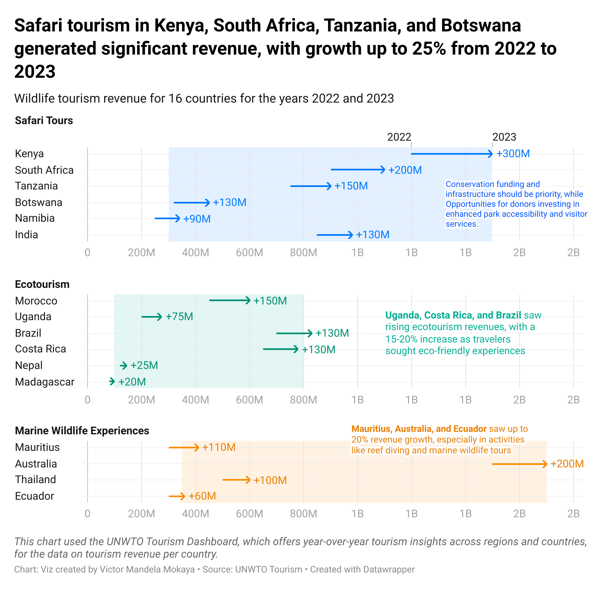

The Growing Importance of Wildlife Economy: A Path to Sustainable Growth
The global wildlife economy plays a crucial role in fostering sustainable development, preserving biodiversity, and providing economic benefits to local communities. By closely monitoring metrics like biodiversity health, tourism revenue, and local employment in wildlife enterprises, stakeholders—governments, donors, and investors—can effectively support a balance between economic growth and conservation. This blog post breaks down the significance of these metrics and why they are essential in shaping policies and investment strategies for wildlife economies.
Understanding the Metrics that Matter
In the context of the wildlife economy, three critical metrics stand out as indicators of both ecological and economic health:

Biodiversity Health Index
This index provides insight into the status of wildlife populations and ecosystems. It tracks the number of species, their population trends, and conservation status. Understanding biodiversity health is essential to ensuring the long-term viability of wildlife tourism and related industries. If species are endangered or habitats are declining, the economic benefits from these activities will eventually diminish. This index helps determine the future sustainability of wildlife-based economies, guiding conservation policies and actions (FAO, 2020).
Tourism Revenue from Wildlife-Based Activities
Wildlife tourism is a significant revenue source, especially for countries rich in biodiversity, such as Kenya, Tanzania, and Australia. The revenue generated from activities like safaris, ecotourism, and marine wildlife experiences helps local and national economies thrive. For instance, in 2023, Kenya and South Africa experienced a growth of up to 25% in their wildlife tourism revenue, highlighting the importance of sustainable tourism in post-pandemic recovery. Monitoring tourism revenue is critical as it provides governments and investors with data to craft policies that support tourism infrastructure, promote conservation, and ensure long-term growth in the sector (WTTC, 2023).
Local Community Employment and Income from Wildlife Enterprises
This metric assesses how wildlife enterprises contribute to the livelihoods of local communities. Activities like ecotourism, wildlife management, and conservation provide employment opportunities and generate income, especially in rural areas. The positive economic impacts from these activities are evident in countries like Uganda and Costa Rica, where ecotourism has seen significant growth, with revenue increases of 15-20% from 2022 to 2023. For governments and donors, this metric underscores the role of wildlife enterprises in poverty alleviation and community development. Supporting these activities with funding and infrastructure can help lift communities out of poverty while promoting sustainable wildlife management practices (UNWTO, 2022).
The 2022-2023 Revenue Shift: What It Means
The wildlife tourism industry has shown remarkable resilience and growth in recent years, especially between 2022 and 2023. Countries heavily dependent on wildlife tourism, such as Kenya, South Africa, and Tanzania, experienced significant increases in revenue—ranging from $900M to $1.7B—as tourists returned post-pandemic. This surge demonstrates the sector’s potential to drive economic recovery and growth.
Here’s a breakdown of how the revenue shifted from 2022 to 2023 across a selection of countries:
| Country | 2022 Revenue (USD) | 2023 Revenue (USD) | Change (%) |
|---|---|---|---|
| Kenya | $1.2B | $1.5B | +25% |
| South Africa | $900M | $1.1B | +22% |
| Tanzania | $750M | $900M | +20% |
| Australia | $1.5B | $1.7B | +13% |
| Mauritius | $300M | $410M | +37% |
| Botswana | $320M | $450M | +41% |

This chart clearly shows the growing importance of wildlife tourism in global economies, particularly in African and island nations. Governments, donors, and investors should recognize the need to continue investing in conservation efforts, sustainable tourism infrastructure, and local community development to sustain this growth.
Implications for Governments, Donors, and Investors
For Governments:
Governments should focus on creating policies that not only protect biodiversity but also ensure that the revenue generated from wildlife tourism is reinvested into conservation and local communities. Strengthening tourism infrastructure, offering incentives for sustainable practices, and implementing environmental protection laws are essential to maintaining the growth of this sector (World Bank, 2022).For Donors:
Donors can contribute by funding community-based conservation programs, supporting sustainable wildlife tourism initiatives, and helping build local capacity. Their investments can help drive the inclusion of local communities in wildlife tourism, enhancing their participation in conservation efforts while simultaneously improving their livelihoods (Global Environment Facility, 2023).For Investors:
Investors should recognize wildlife tourism as a profitable sector with significant growth potential. With revenue increases and demand for sustainable experiences on the rise, investors can explore opportunities in eco-resorts, wildlife conservation partnerships, and eco-tourism ventures. Strategic investments will ensure long-term returns while promoting conservation (International Finance Corporation, 2022).
Conclusion
The wildlife economy is a dynamic and critical sector for both biodiversity and economic development. By focusing on key metrics like biodiversity health, tourism revenue, and local community benefits, governments, donors, and investors can work together to promote sustainable growth that benefits both people and wildlife. As the sector continues to rebound post-pandemic, these efforts will ensure that wildlife economies thrive for generations to come.
References and Further Reading
FAO. (2020). The State of World’s Biodiversity for Food and Agriculture. Food and Agriculture Organization. Link to report.
WTTC. (2023). Economic Impact Report 2023. World Travel and Tourism Council. Link to report.
UNWTO. (2022). Tourism and Biodiversity Report. United Nations World Tourism Organization. Link to report.
World Bank. (2022). Tourism for Sustainable Development. Link to report.
Global Environment Facility. (2023). Funding Biodiversity Conservation Projects. Link to report.
International Finance Corporation. (2022). Sustainable Investment in Tourism. Link to report.